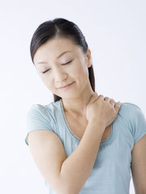
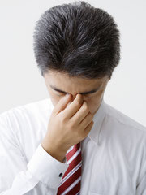

交通事故による「むち打ち症」
むち打ち症

交通事故に遭われた方の多くが、むち打ち症になっているという統計がございます。
むち打ち症という病名はありませんが、交通事故の際、首がむちのようにしなってしまうことからこのように呼ばれています。
※医学的には「むちうち損傷」や「頚椎捻挫」などで分類されます。
症状として吐き気や頭痛、不眠、肩や背中の痛み、倦怠感、何かしらの違和感など、様々な症状が現れる場合があります。事故の翌日くらいから、酷ければ何ヶ月、何年後になって症状が現れたりもします。
むちうち症はそういった意味でも、しっかりと治療しておく事が重要な損傷ですので、たとえ自覚症状が最初は少なくても、必ず専門機関で診察を受ける事が大切なのです。
後遺症・後遺症の種類

事故直後は何も無くても、後々になって、頭痛やめまい、吐き気、倦怠感などに襲われ、外傷もレントゲンなどでも異常は見られないけど、ご本人様が非常につらい思いをされているケースが多く見られます。
治療後の後遺症で苦しまない為にも、確かな技術と実績のある治療院様で診察を受ける事が重要です。
頸椎捻挫
自動車の追突事故・スポーツなどで予測不可能な衝撃が身体に与えられることによって起きる症状です。頸椎とは首の骨のことを言います。この頸椎部分にダメージが与えられると、筋・筋肉・軟骨が損傷することによって痛みを伴うわけです。頸椎は身体で最も重要な部分です。この頸椎の損傷が酷い場合、血管や神経までも重篤なダメージを被り、下手すれば身体が麻痺状態になってしまう恐れがあるくらいなのです。どちらにせよ、正常な機能に回復するには長期間を要します。
バレ・リュー症状型
バレ・リュー症状型は首・肩・腕などが痛む症状と違い、頭痛を伴う症状です。けた違いの衝撃が加えられることによって、頭部後部の交感神経がダメージを受けます（交感神経＝脊髄を通っている神経、昼の行動をつかさどります）。そして椎骨動脈の血液低下を発症し、頭痛・めまい・吐き気などを引き起こす症状です（椎骨動脈＝首の左右にある動脈で脳に栄養を与える役割を持っています）。
脊髄捻挫
脊髄捻挫で悩まれている方は、むち打ち症の７０～８０％を占めると言われています。身体全体に強烈な衝撃を与えられることによって、首や肩などの筋肉・靭帯が損傷し、捻挫を引き起こしてしまう症状です。
根症状型
頸椎が微妙に変形してしまったり、頸椎の神経の通り道が狭くなる（圧迫）ことによって、鈍痛を伴う症状です。神経が圧迫される状態は、末端神経（手・指先）にも支障をきたすため、非常に危険な症状とも言えます。
脊髄症状型
頸椎の脊柱管を通る脊髄が損傷することによって、知覚異常を引き起こす症状です（知覚異常＝下肢のしびれ）。そして、非常に稀な場合でもありますが、膀胱直腸障害を引き起こす可能性もあります（膀胱直腸障害＝膀胱・直腸の機能が低下し、排尿・排便などに支障が起こる障害）。